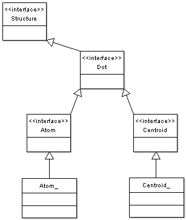
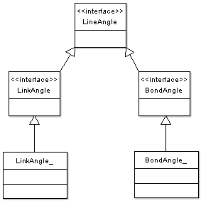
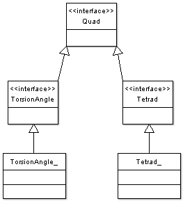
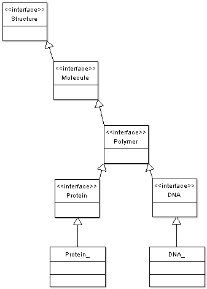
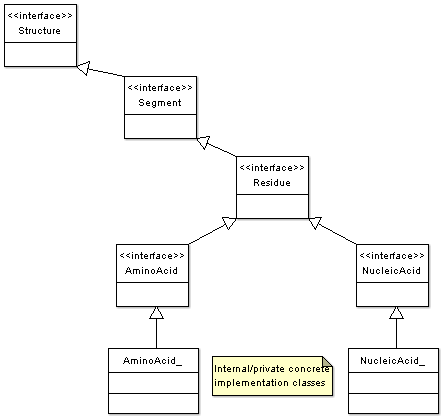

libRosetta Class HierarchieslibRosetta uses the relationships between its classes to express the relationships between the entities used in Rosetta. These relationships are handled in classic Rosetta by explicit type flag tests that have become hard to maintain as the complexity of Rosetta's types and special cases has grown. To eliminate this limitation libRosetta adds a "vertical" type relationship framework to the "horizontal" algorithmic framework. This will look strange at first to developers used to the flat design of classic Rosetta and it takes a little time to understand where things are now and what (small) subset of this hierarchy a user needs to use the library. Tools for class browsing are also a big help in jumping to the definitions of variables and functions. The class relationships in libRosetta are intentionally not at all exotic. The types and their relationships should seem straightforward to Rosetta developers: an AminoAcid is a type of Residue, a Protein is a type of Polymer, which is a type of Molecule, and so forth. Some extra internal classes are present mostly to let us share common code: take a look at the Class Design page to get a sense of what is there and why. With this basic type system libRosetta can remove many of the barriers to research that a procedural system will present when the application complexity reaches the level of Rosetta. Here are UML class diagrams for some of the primary libRosetta class hierarchies. The Doxygen source documentation should be consulted to see the complete class relationships. Dot/Atom/Centroid We call the abstract point object a Dot. 
We call the abstract association linkage between 2 Dots a Line. We use ChemicalBond for any kind of bond and Bond for covalent bonds.
These are 3 Dot constructs that represent the angle between 2 Lines that connect to the same Dot. 
These are linear or tetrahedral constructs between 4 Dots and the Lines that connect them. 

 |
libRosetta Classes

Support | ©2007 Rosetta Commons